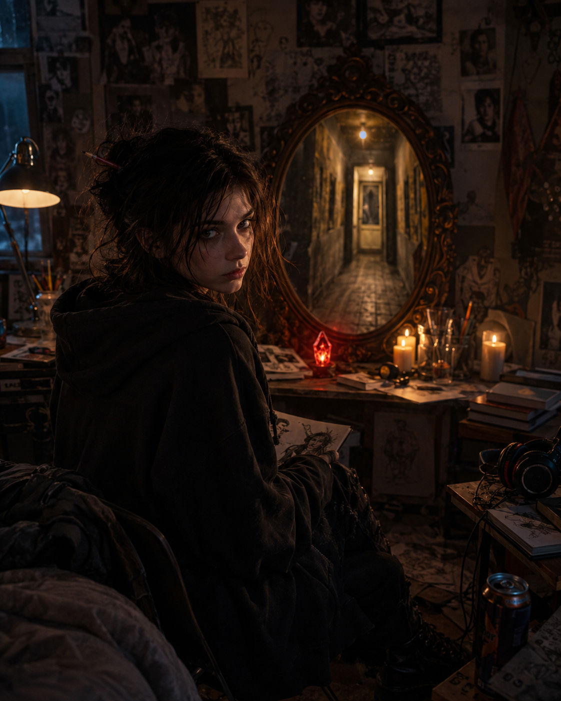
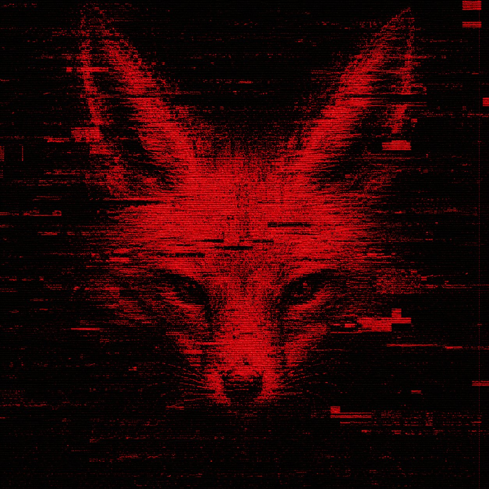

the hallway is long. the hallway is tiled. the tiles are green-gray. you have seen these tiles before. you saw them in the photographs. you saw them under the candles and the blades and the prayer beads. this is the same hallway. you are inside the photograph now.
the hallway has three doors.
the hallway continues past the three doors. it should not continue. the floor plan says the hallway ends here. the hallway disagrees.
past the doors, the corridor stretches further than it should. the measurements are wrong. →
there is a door you do not remember seeing before. it is watching you. →
at the far end, a faint light. campfire light. it feels familiar. →
you can also go back. you can always go back. ←
the hallway is also a throat. you are being swallowed. the house converts readers into rooms. you are becoming architecture.
there is a room with no door. the room sees you. →
there is a crack in the wall. something glows behind the plaster. you could break through.